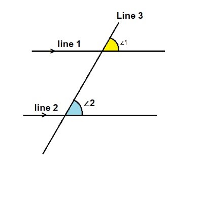
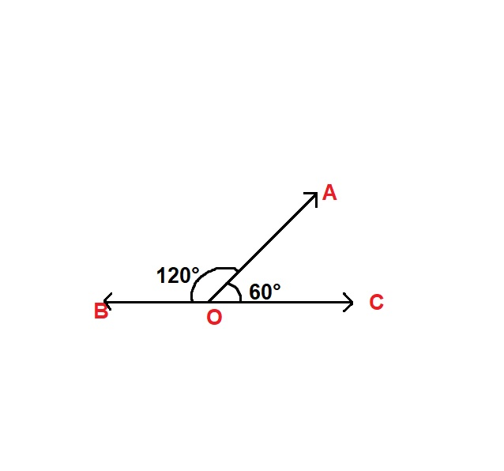
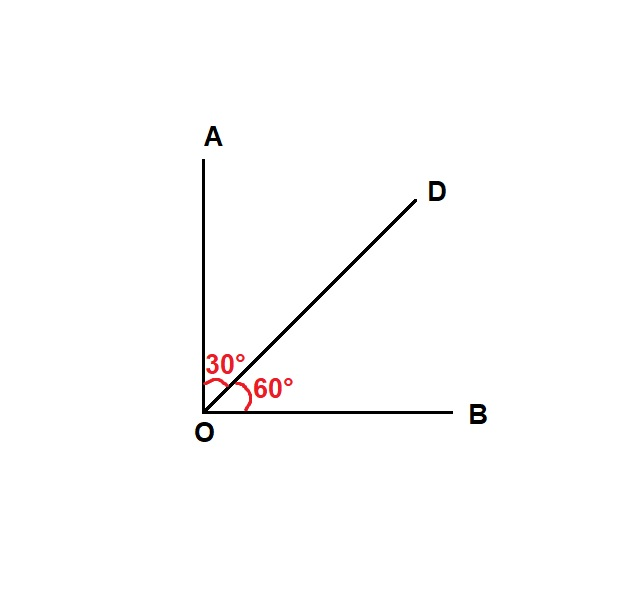
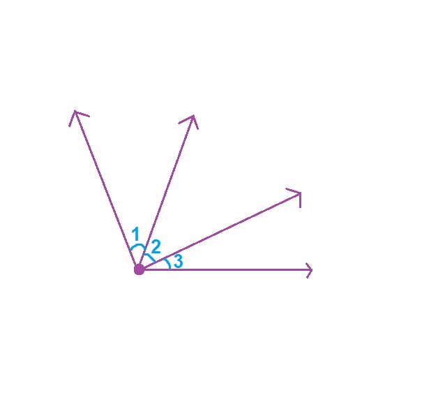
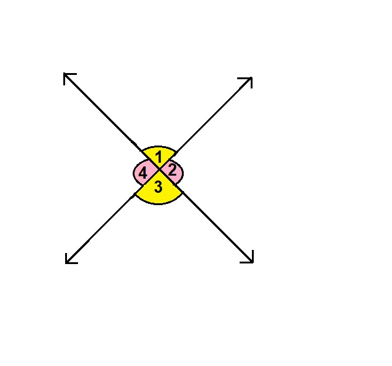

Corresponding angles:
When two parallel lines are intersected by a third one (transversal) , the angles that occupy the same relative position at each intersection are known to be corresponding angles to each other.  From the figure according to the definition of the corresponding angles, we can conclude that:
- Line 1 and line 2 are parallel. Thus, we have two parallel lines.
- Line 3 intersects line 1 and line 2. Thus, we have a transversal.
- In figure we can also see that ∠1 and ∠2 are on the same matching corners.
Therefore, we can say that angles ∠1 and ∠2 are corresponding angles.
PROPERTIES:
- Corresponding angles are on the same side of the transversal.
- They consist of one interior and one exterior angle.
- They are equal if the transversal intersects two parallel lines.
- They are not related if the transversal intersects the two non-parallel lines.
- Corresponding angles are supplementary if the transversal perpendicularly intersects two parallel lines.
Supplementary Angles:
Supplementary angles are defined as two angles that add to 180 degrees.
In the given figure, ∠AOC + ∠AOB = 120° + 60° = 180°
Complementary Angles:
Complementary angles are two angles whose sum equals 90 degrees.
In the given figure, ∠AOD + ∠DOB = 30° + 60° = 90°
Adjacent Angles:
These angles are always placed next to each other in such a way that they share a common vertex and a common side but they do not overlap each other.
In the figure above the pair of adjacent angles are ∠1, ∠2 and ∠2, ∠3.
Properties of Adjacent Angles:
- Adjacent angles always share a common arm.
- They share a common vertex.
- They do not overlap.
- They have a non-common arm on both sides of the common arm.
- Two adjacent angles can be supplementary or complementary based on the sum of the measures of the individual angles.
Vertically opposite Angles:
Vertically opposite angles are those created when two lines intersect at a common point or vertex.
In simple words, vertical angles are located across from one another in the corners of the "X" formed by two straight lines.

In the figure shown above the vertical angles are ∠1 = ∠3 and ∠2 = ∠4
Properties:
- Vertical angles are always equal.
- Vertical angles can be supplementary as well as complimentary.
- Vertical angles are always non adjacent.